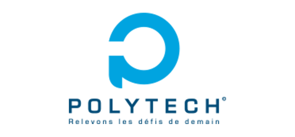
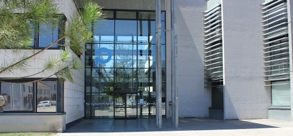
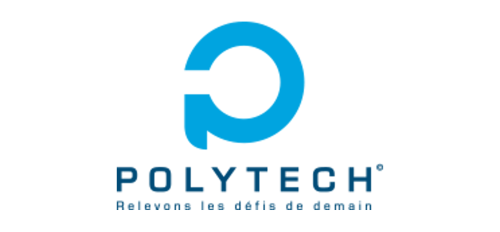
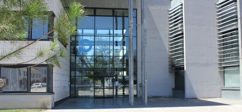

Informatique

Electronique

Santé

Ultima Syriarum est Palaestina per intervalla magna protenta, cultis abundans terris et nitidis et civitates habens quasdam egregias, nullam nulli cedentem sed sibi vicissim velut ad perpendiculum aemulas: Caesaream, quam ad honorem Octaviani principis exaedificavit Herodes, et Eleutheropolim et Neapolim itidemque Ascalonem Gazam aevo superiore exstructas.
Membre du réseau Polytech et, depuis peu, membre du réseau des INP, Polytech Grenoble se classe comme une excellente école d'ingénieur. Elle apporte des enseignements de qualité dans différents domaines et en particulier celui du numérique. En effet, plusieurs formations sont directement concernées par les nouvelles technologies, ce qui fait de Polytech Grenoble une école moderne et influente.
Située à Saint-Martin-d'Hères, elle possède également de nombreux partenariats avec des entreprises locales. Ces entreprises ont la possibilité de venir une fois par an pour rencontrer les élèves et inversement. Cet évènement s'appelle la Journée Polytech Pro et a pour but de créer un premier contact entre les élèves et le monde du travail.
Elle possède également de nombreuses associations qui enrichissent grandement sa vie étudiante :
Parmi toutes ces associations, il ne manquait plus qu'une association comme Linko pour également permettre aux étudiants de montrer l'étendue de leur capacité. En effet, nous serons leur premier lien entre les étudiants friands de nouvelles expériences et les entreprises désireuses de nous faire confiance.
 


